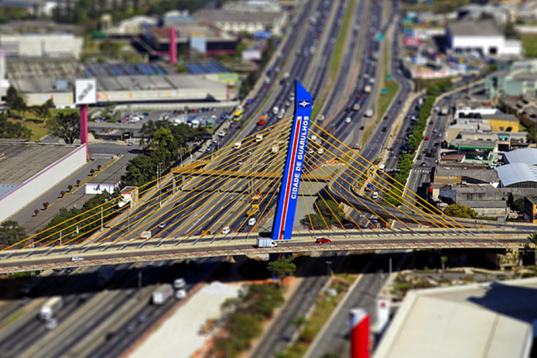

Minha Cidade
Guarulhos

Historia
Guarulhos foi fundada em 8 de dezembro de 1560, pelo padre jesuíta Manuel de Paiva, com a denominação de Nossa Senhora da Conceição. Sua origem está ligada à de cinco outros povoamentos que tinham, como principal objetivo, defender o povoado de São Paulo de Piratininga contra um possível ataque dos Tamoios.
Na mesma época de sua fundação, nascia também, com o mesmo propósito, a vila de São Miguel, hoje bairro de São Miguel Paulista. Por volta do ano 1600, havia, na região, atividades de mineração de ouro.[9]
Em 1880, Guarulhos se emancipou de São Paulo, com o nome de Nossa Senhora da Conceição dos Guarulhos. O nome atual só foi adotado após a promulgação da Lei nº 1 021, de 6 de novembro de 1906.
O início do século XX foi marcado pela chegada da ferrovia e da energia elétrica (Light & Power), pelos pedidos para instalação da rede telefônica, licenças para implantação de indústrias, de atividades comerciais e pelos serviços de transporte de passageiros.
A década de 1930 foi marcada pelos atos de Intervenção Federal, Constituição da Junta Governativa de Guarulhos e pelo Movimento Constitucionalista (reflexos da Revolução de 1930 - fim da República Velha).
Em 1940, foi inaugurada a Biblioteca Pública Municipal. Em 1941, o primeiro Centro de Saúde da cidade. Dez anos após, inaugurou-se a Santa Casa de Misericórdia de Guarulhos. Nessa década, chegaram, ao município, indústrias dos setores elétrico, metalúrgico, plástico, alimentício, além das de borracha, calçados, peças para automóveis, relógios e couros.
Em 1945, a Base Aérea de São Paulo (BASP) foi transferida do Campo de Marte, em São Paulo, para o bairro de Cumbica.
Em 1958, foi constituída a associação de rotarianos da cidade.
Em 1963, foi fundada a Associação Comercial e Industrial de Guarulhos, hoje, Associação Comercial e Empresarial de Guarulhos (ACE).
Em 1985, foi inaugurado o aeroporto de Cumbica, hoje denominado "Aeroporto Internacional de São Paulo-Guarulhos Governador André Franco Montoro".
Demografia
- Popuação Total: 1 221 979
- Homens: 595 043
- Mulheres: 626 936
| COR/Raça |
Porcentagem |
| Brancos |
53,5% |
| Negros |
6,3% |
| Pardos |
38,8% |
| Amarelos |
1,3% |
| Indígenas |
0,1% |
Economia
A Economia de Guarulhos começou no período colonial, em 1597 por Afonso Sardinha com a mineração de Ouro na região das Lavras Velhas do Geraldo ou Catas Velhas onde hoje é conhecida apenas como bairro das Lavras. Esse período do ciclo do ouro em Guarulhos durou mais de 200 anos. Com o fim da exploração aurífera, vieram, depois, os ciclos do Tijolo ao longo das várzeas dos rios Tietê, Cabuçu e Baquirivu-guaçu surgindo centenas de olarias na cidade, na maioria pelos imigrantes italianos. Com a introdução do tijolo como material de construção substituindo a taipa de pilão, as olarias em Guarulhos encontrou espaço na economia Paulista. O surgimento das indústrias em Guarulhos começou a partir de 1915 com a implantação do ramal da Tramway da Cantareira que acabaram sendo atendidos pela linha ferroviária.
Guarulhos foi considerada a 13ª cidade mais rica do Brasil, em 2013, com um Produto Interno Bruto (PIB) na ordem de 49,3 bilhões de reais, o que representa 1,01% de todo PIB brasileiro na época.